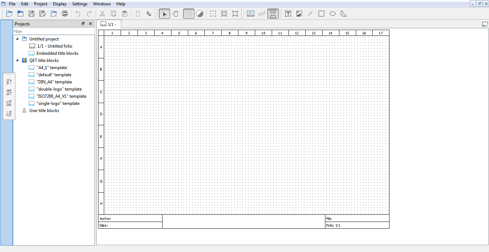

GUI costumization¶
GUI panels and toolbars placement¶
At QET, only three areas cannot be hide or costumized by the user, these areas are the main menu bar, the work space and the folio title bar. Having only visible these three areas is the minimal configuration for the graphic environment of QET.

The QET GUI allows having many different panels and toolbars switched on to make easier the work of the user. The user can choose the panels and toolbars display preferences at Settings –> Display.

All panels that are displayed can be placed at right and left side from the work space area. The panels can also be displayed as a floating windows that the user place where he wants. At the case that the user places the panels at the right or left side from the work space area, the user can choose if they are organized on column or using tabs.

If the user wants to change the organization of the panels, he should only make right click with the mouse on the title bar and desplace the mouse without releasing the button.

The toolbars from QET can also be organized according the wishes from the user. The toolbars can be placed on top from the work space and folio title bar. It would also be on top from project title bar if this option is displayed. The user can define the number of toolbar rows and the organization from them only making right click on the left side of the toolbar and moving it without releasing the button from the mouse.
The toolbars can also be placed on vertical position at the left and right side from the work space area.
Project display¶
There is two different ways to manage the activation and hidden of the different opened project from QET, the projects can be organized at a project title bar that would be shown at the top from the folio title bar or as floating windows that can be displayed or minimized. The managing preferences of the projects can be choosed at Display –> Display projects.